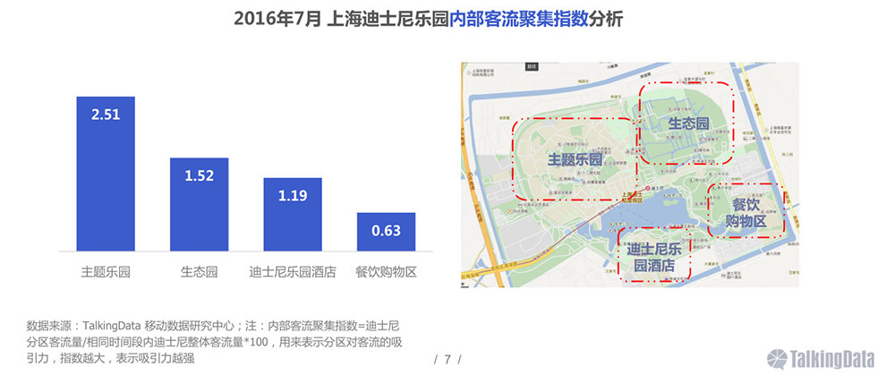

上海迪士尼用户群体数据分析
数据来源《TalkingData-2016年上海迪士尼人群洞察报告 》，这里仅摘取部分比较有参考价值的用户相关数据：
上海迪士尼开园以来，吸引了大批游客前往游览，用户画像方面，人群呈现出年轻化、中产家庭等特征；应用方面较为偏好出行和旅游类，消费意愿强于移动互联网整体；总的来说上海迪士尼吸引力较强
从上海迪士尼内部分区客流聚集指数来看，主题乐园更受人群欢迎，其次是生态园，相对来说，餐饮购物区的客流较少，人群去迪士尼主要是体验各类游乐设施，对餐饮和购物的关注相对不高

上海迪士尼人群年龄分布以年轻用户为主，35岁及以下占77.1%，可见年轻人对迪士尼更为热衷
上海迪士尼人群七成为已婚人士，远高于移动互联网整体的51.6%；上海迪士尼人群车辆拥有情况中，迪士尼人群拥有车辆的比例也远高于移动互联网整体

上海迪士尼人人群使用的设备品牌以苹果为主，占比达到63.6%；设备机型TOP5均是苹果的机型；上海迪士尼人群使用设备较为高端
上海迪士尼人人群使用的设备价位以4000元及以上为主，设备尺寸以5.5-5.1英寸为主
上海迪士尼人群关联应用类型中，工具、网络购物和社交占比排名前三；但是对比移动互联网整体：出行、旅游、教育、房产和汽车等类型的应用受到迪士尼人群青睐
出行类应用关联度TOP10中，百度地图、高德地图和滴滴出行分列前三；对比移动互联网整体，TOP10的出行应用皆受迪士尼人群的青睐，相对来说，易到用车和嘀嗒拼车的指数更高
上海迪士尼乐园吸引了全国各地的游客前去游玩，试运营期间主要辐射面在长三角和东部地区，正式开园之后，辐射面较广，吸引全国各地的人前来游览